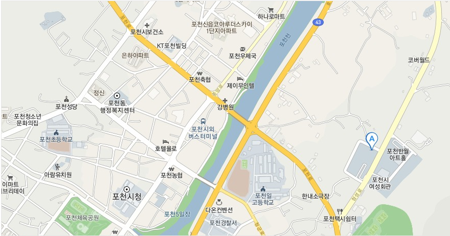

찾아오시는길
행복콜 찾아오시는길
안내입니다.

경기도 포천시 군내면 청성로 112
포천시도시공사
자가용 이용시 포천으로 오시는 길(국도안내)
- 47번 국도 : 구리 - 판교구간 경부, 중부고속도로 진입 - 퇴계원 IC (서울외곽순환도로종점)
- 43번 국도 : 동부간선도로 진입 - 의정부에서 포천방향 43번 국도 진입
- 37번 국도 : 47번 국도 진입 - 일동면사무소에서 포천방향 - 43번 국도와 연결
대중교통 포천으로 오시는 길(교통편)
- 상봉(수유)시외버스터미널 ⇒의정부⇒송우리⇒대진대학교⇒포천터미널
- 138, 72번 좌석버스 : 의정부전철역 ⇒ (포천터미널)
- 72-3번 : 창동역 ⇒ 의정부역 ⇒ 포천시청 ⇒ 포천시도시공사, 반원아트홀, 여성회관
담당부서: 공공시설팀 교통약자
이동지원센터담당자: 박수환전화번호: 031-540-6162